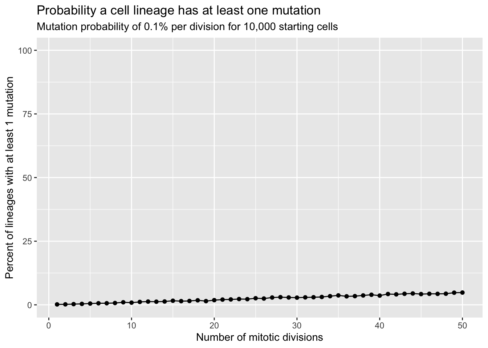
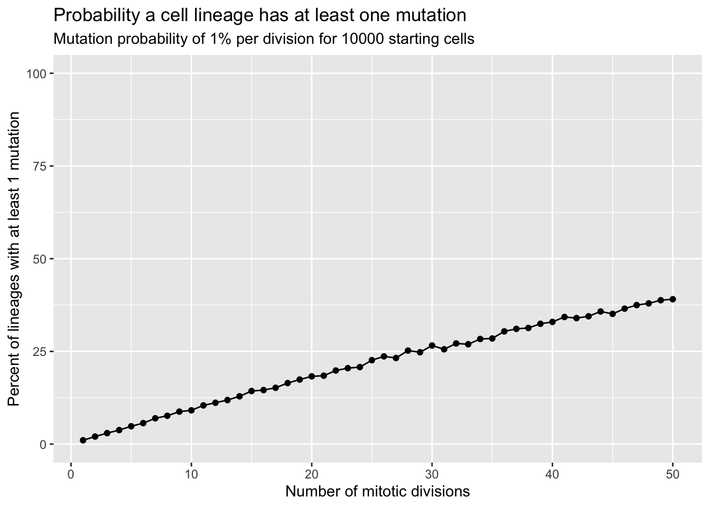
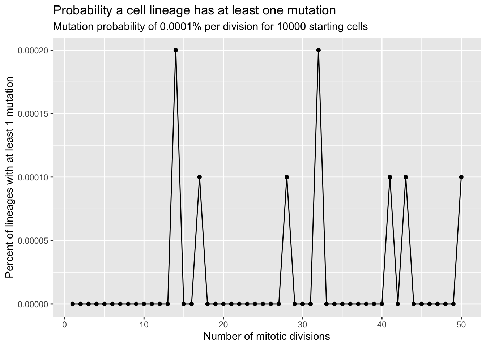

library(tidyverse)
set.seed(4747)
has_mutation <- function(n_divisions, prob){
random <- runif(n_divisions)
mutation_flag <- random < prob
total_mutations <- sum(mutation_flag)
ifelse(total_mutations > 0, TRUE, FALSE)
}Simulation
The Task
Today, my goal is to simulate probabilities related to the accumulation of genetic mutations in somatic cells, which are key drivers of oncogenesis. The mutations being modeled arise from spontaneous events in cells and environmental conditions. I will be modeling these mutations from a single cell the undergoes n mitotic divisions and yields a final cell lineage. At each division, I will assume there is an equal probability, prob, that a mutation occurs. Once any mutation happens, the lineage is considered “mutated” and is no longer considered a wild type population. We want to estimate the probability that the lineage has at least 1 mutation after n divisions.
Beginning the model
To begin, I will set up a function to detect mutations. To do this, I will write a function with two inputs, one being the number of divisions, n_divisions, that we can model the cell dividing n times, and the second being prob, the probability of a mutation occuring at each division. For each division, I will generate a random uniform number between 0 and 1 with runif(). Then, I will compare this number with the probability value, prob, and say that there was a mutation if the random uniform number generated at that division is less than the probability that there is a mutation at that division. This will create a logical vector. If the sum of this logical vector is greater than 0, then there is a mutation in that simulated lineage.
The above logic can be used to simulate larger numbers of lineages. To start, we will simulate the probability of 0.001, meaning that each cell division has a 0.1% chance of generating a new mutation that persists in the lineage. I will simulate 10000 starting cells independently going through 50 cell divisions. The first map will repeat the next map 50 times, simulating each division. The map_lgl() simulates n_cells cells going through a division and repeats that process 10000 times, and sums the has_mutation() function defined above on each division This inner map_lgl() function returns TRUE if a lineage picked up at least one mutation, and returns FALSE otherwise. The combinations of the maps, while confusing at first, was the only way I figured out how to get multiple simulated cells going through mutliple division cycles. The final tibble() summarizes the results for each of the 10000 cells after each division cycle, and calculates the proportion of TRUE values after that division cycle. This gives a 2x1 data frame for each division. The final pipe into list_rbind() gives us a final data frame of the proportion of lineages that have a mutation after each division.
set.seed(4747)
prob_0 <- 0.001
n_cells <- 10000
number_of_divisions <- 1:50
results <- map(number_of_divisions, function(n) {
outcomes <- map_lgl(1:n_cells, .f = ~ has_mutation(n_divisions = n, prob = prob_0))
tibble(divisions = n, prob_mutated = mean(outcomes))
}) |>
list_rbind()
results# A tibble: 50 × 2
divisions prob_mutated
<int> <dbl>
1 1 0.0017
2 2 0.0019
3 3 0.0028
4 4 0.0037
5 5 0.005
6 6 0.0062
7 7 0.0063
8 8 0.0072
9 9 0.01
10 10 0.0086
# ℹ 40 more rowsLet’s visualize!
Let’s visualize what this data frame looks like graphically as mutations are accumulated across the simulated cell populations.
ggplot(results, aes(x = divisions, y = prob_mutated * 100)) +
geom_line() +
geom_point() +
scale_y_continuous(limits = c(0, 100)) +
labs(
title = "Probability a cell lineage has at least one mutation",
subtitle = "Mutation probability of 0.1% per division for 10,000 starting cells",
x = "Number of mitotic divisions",
y = "Percent of lineages with at least 1 mutation"
)
Let’s check how this plot changes with a a higher frequency of mutation, say a 1% chance of a mutation each cell division.
set.seed(4747)
prob_1 <- 0.01
n_cells <- 10000
number_of_divisions <- 1:50
results_1 <- map(number_of_divisions, function(n) {
outcomes <- map_lgl(1:n_cells, .f = ~ has_mutation(n_divisions = n, prob = prob_1))
tibble(divisions_1 = n, prob_mutated_1 = mean(outcomes))
}) |>
list_rbind()
results# A tibble: 50 × 2
divisions prob_mutated
<int> <dbl>
1 1 0.0017
2 2 0.0019
3 3 0.0028
4 4 0.0037
5 5 0.005
6 6 0.0062
7 7 0.0063
8 8 0.0072
9 9 0.01
10 10 0.0086
# ℹ 40 more rowsresults_1# A tibble: 50 × 2
divisions_1 prob_mutated_1
<int> <dbl>
1 1 0.0104
2 2 0.0204
3 3 0.0296
4 4 0.0379
5 5 0.0481
6 6 0.0566
7 7 0.0696
8 8 0.0764
9 9 0.0876
10 10 0.0911
# ℹ 40 more rowsggplot(results_1, aes(x = divisions_1, y = prob_mutated_1 * 100)) +
geom_line() +
geom_point() +
scale_y_continuous(limits = c(0, 100)) +
labs(
title = "Probability a cell lineage has at least one mutation",
subtitle = "Mutation probability of 1% per division for 10000 starting cells",
x = "Number of mitotic divisions",
y = "Percent of lineages with at least 1 mutation"
)
Wow. That’s a lot of accumulated mutations! Luckily, our cells do not have a 1% chance of accumulating a meaningful, harmful, and disruptive mutation each time they divide (if they did, we likely wouldn’t exist). Let’s use a more biologically relevant proportion of mutation.
I’ll model a 1e-6 per-division probability that a daughter cell acquires a mutation that is not just silent, but actually alters fitness in a biologically meaningful way. This is a reasonable number, modeling a mutation in any meaningful, harmful mutation across a panel of key genes/pathways.
set.seed(4747)
prob_2 <- 1e-6
n_cells <- 10000
number_of_divisions <- 1:50
results_2 <- map(number_of_divisions, function(n) {
outcomes <- map_lgl(1:n_cells, .f = ~ has_mutation(n_divisions = n, prob = prob_2))
tibble(divisions_2 = n, prob_mutated_2 = mean(outcomes))
}) |>
list_rbind()
results_2# A tibble: 50 × 2
divisions_2 prob_mutated_2
<int> <dbl>
1 1 0
2 2 0
3 3 0
4 4 0
5 5 0
6 6 0
7 7 0
8 8 0
9 9 0
10 10 0
# ℹ 40 more rowsLooking at the above data frame, we know these mutation frequencies will be close to zero. So, I will zoom in on the graph to see the actual trend (i.e, the y-axis here will not go from 0 to 100).
ggplot(results_2, aes(x = divisions_2, y = prob_mutated_2)) +
geom_line() +
geom_point() +
labs(
title = "Probability a cell lineage has at least one mutation",
subtitle = "Mutation probability of 0.0001% per division for 10000 starting cells",
x = "Number of mitotic divisions",
y = "Percent of lineages with at least 1 mutation"
)
This is very close to 0. And that’s a good thing! Most cell divisions faithfully copy DNA with no meaningful changes. Once in tens of thousands or millions of divisions, a driver mutation pops up — a mutation that actually changes cell fitness and can lead to downstream problems. That rare event can seed a clone that can later expand, but the initial occurrence is tremendously rare, as shown above.
That’s it!
Thanks for joining me on my first simulation today! That was a lot of fun.